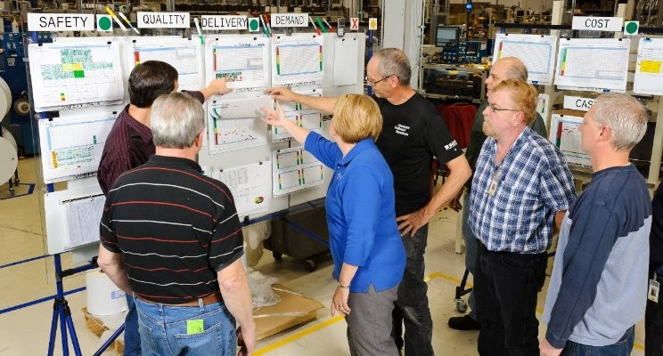

2 La estadística en el entorno industrial.

2.1 Introducción
¿Alguna vez te has preguntado cómo podemos resolver problemas en el trabajo de forma sistemática y ordenada? La estadística y el método científico nos ayudan a hacerlo, y son más sencillos de lo que parece.
El método científico es como una receta que seguimos para resolver problemas: primero observamos qué está pasando, luego pensamos qué puede estar causando el problema, después hacemos pruebas para comprobarlo, y finalmente sacamos conclusiones y tomamos acciones orientadas a eliminar el problema o conseguir una mejora, aunque sea parcial, y repetimos el ciclo. La estadística nos ayuda a entender si nuestras pruebas funcionaron o no, usando números y datos reales.
Pensar de forma estadística significa entender que todo lo que hacemos en el trabajo está conectado, y que es normal que las cosas cambien o varíen un poco. Lo importante es saber cuándo estos cambios son normales y cuándo indican un problema real. Es como cuando cocinamos: sabemos que cada plato puede salir un poco diferente, pero reconocemos cuando algo ha salido realmente mal.
En las fábricas y talleres, estas herramientas son muy útiles. Por ejemplo, si una máquina empieza a producir piezas defectuosas, podemos:
- Observar qué está pasando
- Pensar en posibles causas
- Hacer pruebas controladas para encontrar el problema
- Usar números y datos para confirmar si lo hemos solucionado
La experimentación es muy importante en la industria. En vez de cambiar las cosas al azar, hacemos pruebas organizadas para ver qué funciona mejor. Es como cuando ajustas la temperatura del horno y el tiempo de cocción para que un pastel salga perfecto: pruebas diferentes combinaciones y anotas los resultados.
Lo mejor de todo es que cada vez que hacemos estos experimentos, aprendemos algo nuevo. Incluso si algo no funciona como esperábamos, esa información nos ayuda a mejorar la próxima vez. Es un proceso continuo de aprendizaje y mejora.
Esta forma de trabajar nos ayuda a:
- Resolver problemas de forma ordenada
- Tomar mejores decisiones basadas en datos reales
- Mejorar la calidad de nuestro trabajo
- Ahorrar tiempo y dinero evitando errores
Recuerda: no necesitas ser un genio de las matemáticas para usar estas herramientas. Lo importante es ser organizado, observar bien lo que pasa y anotar los resultados de lo que hacemos. Así, poco a poco, podemos mejorar nuestro trabajo y resolver problemas de forma más eficiente.
Los métodos estadísticos nos ayudan a describir y comprender la variabilidad. Cuando hablamos de variabilidad queremos decir que sucesivas observaciones de un mismo proceso o sistema no dan exactamente los mismos resultados. Por ejemplo, el consumo de gasolina de un coche no es siempre igual, sino que varía de manera considerable. Esta variación depende de muchos factores, como la forma de conducir, el tipo de carretera, la situación del propio vehículo (presión de neumáticos, compresión del motor, …), la marca de la gasolina, el octanaje, o incluso las condiciones meteorológicas. Todos estos factores son causas de variabilidad en el consumo de gasolina. La estadística nos permite analizar estos factores y determinar cuáles son los más importantes o tienen mayor impacto en el consumo; una vez conocidos, podemos actuar sobre ellos.
En este libro aprenderemos a utilizar herramientas diversas, tanto estadísticas como de la ciencia de datos, para realizar nuestro análisis. Para aprender de los datos necesitamos más que los simples números; para interpretarlos necesitaremos siempre el conocimiento del proceso industrial que estamos analizando.En un análisis de la producción de un producto lácteo, por ejemplo, los números significan poco sin un conocimiento del proceso; los valores de pH, temperatura o concentración de lactosa influyen en el resultado del proceso de forma diferente. Los datos son números dentro de un contexto, y necesitamos conocer este contexto para dar sentido a los números.
El objetivo principal de la mejora industrial es la reducción de la variabilidad.
2.2 El pensamiento estadístico y el método científico.
La estadística y el método científico mantienen una relación fundamental que impulsa el avance del conocimiento y la innovación. El método científico, con sus pasos de observación, hipótesis, experimentación y conclusiones, encuentra en la estadística las herramientas necesarias para validar o refutar hipótesis de manera objetiva y cuantificable.
El pensamiento estadístico es una filosofía de aprendizaje y acción basada en tres principios fundamentales:
- que todo proceso industrial está compuesto a su vez por procesos interconectados,
- que la variabilidad existe y es inherente a estos procesos, y
- que entender y reducir la variación es clave para la mejora y el éxito
En el entorno industrial, esta integración entre estadística y método científico ha revolucionado los procesos de mejora continua. Por ejemplo, cuando una línea de producción enfrenta problemas de calidad, el método científico guía la investigación sistemática: se observa el proceso, se formulan hipótesis sobre las causas del problema, se diseñan experimentos controlados, y se analizan los resultados estadísticamente para determinar la validez de las soluciones propuestas.
La experimentación industrial, particularmente a través del diseño de experimentos (DOE), se ha convertido en una herramienta fundamental para la mejora continua. En lugar de modificar procesos basándose en intuiciones o experiencias pasadas, las empresas pueden realizar experimentos controlados que:
- Optimizan múltiples variables simultáneamente
- Identifican interacciones entre factores que afectan el proceso
- Reducen el tiempo y costo de las mejoras
- Proporcionan conclusiones respaldadas por evidencia estadística
Al realizar experimentos controlados, las empresas pueden probar hipótesis que permitan evaluar el impacto de diferentes variables en los procesos y productos y determinar los valores óptimos de los parámetros de los procesos para maximizar la calidad y la eficiencia. Esto genera conocimiento valioso sobre los procesos y productos, permite tomar decisiones más informadas, y ayuda a crear y mantener una ventaja competitiva.
La experimentación, combinada con el análisis estadístico, permite a las empresas implementar ciclos de mejora continua, donde los resultados de cada experimento se utilizan para refinar los procesos y productos.
Al integrar el pensamiento estadístico con el método científico en el entorno industrial, las organizaciones pueden desarrollar una cultura de mejora continua basada en la evidencia de los datos y no en suposiciones o intuiciones. En una cultura industrial basada en el método científico, cada problema es una oportunidad para experimentar, aprender y optimizar. Esta aproximación sistemática no solo mejora la calidad y eficiencia de los procesos, sino que también fomenta la innovación y el aprendizaje organizacional continuo.
La clave del éxito radica en entender que la experimentación no es un evento aislado, sino un proceso continuo de aprendizaje y mejora. Cada experimento, exitoso o no, aporta información valiosa que, analizada correctamente mediante métodos estadísticos, contribuye al conocimiento colectivo de la organización y sienta las bases para futuras mejoras. La estadística y el método científico no solo son pilares fundamentales para la investigación académica, sino que también desempeñan un papel crucial en el entorno industrial. La aplicación sistemática del método científico, respaldada por herramientas estadísticas, permite a las empresas optimizar procesos, mejorar la calidad de sus productos y servicios, y fomentar la innovación.
En el entorno industrial, el pensamiento estadístico es esencial para:
- Tomar decisiones basadas en datos, evitando decisiones basadas en intuiciones o suposiciones.
- Evaluar riesgos, cuantificando la incertidumbre y permitiendo tomar decisiones que minimicen los riesgos.
- Mejorar el conocimiento de los procesos para una toma de decisiones más eficaz.
- Comunicar resultados, presentando los resultados de los análisis de manera clara y concisa.
La integración del método científico y el pensamiento estadístico en la cultura empresarial impulsa la innovación, la eficiencia y la competitividad.
2.3 Los datos industriales
En el entorno industrial, podemos organizar los datos en varias categorías, considerando tanto su naturaleza como la forma en que se obtienen:
Según su estructura:
- Datos estructurados:
- Son datos organizados en un formato definido, como tablas de bases de datos, hojas de cálculo o archivos CSV. Su estructura facilita el análisis y la consulta.
- Ejemplos: lecturas de sensores, registros de producción, datos de control de calidad, información de inventario.
- Datos no estructurados:
- Son datos que no tienen un formato predefinido, como texto, imágenes, audio o video.Su análisis requiere técnicas más avanzadas, como el procesamiento de lenguaje natural o la visión artificial.
- Ejemplos: registros de mantenimiento, informes de incidentes, imágenes de inspección visual, grabaciones de audio de maquinaria.
- Datos semiestructurados:
- Son datos que tienen cierta estructura, pero no tan rígida como los datos estructurados, y permiten una mayor flexibilidad en el almacenamiento y el intercambio de información.
- Ejemplos: archivos XML o JSON, registros de eventos.
Según su origen y método de obtención:
- Datos históricos (Estudios retrospectivos):
- Son datos recopilados en el pasado, que se utilizan para analizar tendencias, identificar patrones y predecir el comportamiento futuro. Permiten comprender la evolución de los procesos.
- Ejemplos: registros de producción de años anteriores, datos de fallos de maquinaria, históricos de ventas.
- Datos observacionales (Estudios observacionales):
- Son datos recopilados mediante la observación de procesos o sistemas, sin intervenir en ellos. Permiten identificar relaciones entre variables y comprender el comportamiento de los procesos en condiciones reales.
- Ejemplos: mediciones de temperatura, vibración o presión de maquinaria, registros de tiempo de ciclo de producción.
- Datos experimentales (Experimentos diseñados):
- Son datos recopilados mediante la realización de experimentos controlados, en los que se manipulan variables para evaluar su efecto. Permiten establecer relaciones de causa y efecto, estudiar las interacciones entre las variables y optimizar el rendimiento de los procesos.
- Ejemplos: datos de pruebas de rendimiento de nuevos materiales, resultados de experimentos de optimización de procesos.
- Datos de monitorización o control de procesos en tiempo real:
- son datos que se recaban de manera instantanea, y permiten actuar de manera casi inmediata en los procesos; permiten implementar el mantenimiento predictivo, y evitar perdidas de produccion.
- Ejemplos: datos de sensores que detectan fallos en maquinaria, alarmas de procesos fuera de control.
En el contexto de la Industria 4.0, la cantidad y variedad de datos industriales está aumentando exponencialmente.
Estudios retrospectivos o históricos
Un estudio retrospectivo o histórico es el que utiliza una muestra o todos los datos históricos de un proceso, recogidos en el pasado durante un período determinado de tiempo. El objetivo de un estudio de este tipo puede ser la investigación sobre la relación entre algunas variables, o explorar la calidad de la información disponible, o construir un modelo que permita explicar el proceso tal como es actualmente, o saber si se ha desviado. Estos modelos del proceso se denominan modelos empíricos, porque están basados en los propios datos del proceso y no en una formulación teórica sobre el mismo.
Un estudio retrospectivo tiene la ventaja de tener a su disposición un gran número de datos que ya han sido recogidos, minimizando el esfuerzo de obtenerlos. Sin embargo, tiene varios problemas potenciales:
- Si no disponemos de detalles suficientes, es posible que no podamos determinar si las condiciones de variación de los valores obtenidos responden a las mismas causas que en la situación actual.
- Es posible que nos falte algún valor clave que no haya sido recogido o que lo haya sido de manera defectuosa
- Algunas veces, la fiabilidad y validez de los datos de proceso históricos son dudosas, o al menos, cuestionables.
- Los datos históricos no siempre se han recogido con la perspectiva actual del proceso, y es posible que no nos proporciones explicaciones adecuadas del proceso en su situación actual.
- A veces queremos utilizar los datos históricos de proceso para fines que no estaban previstos cuando se recogieron
- Las notas sobre los valores del proceso, incluyendo los valores anormales, pueden ser insuficientes o inexistentes, y no tenemos ninguna explicación sobre los posibles valores anómalos que detectamos en el análisis.
Usar datos históricos siempre tiene el riesgo de que, por la razón que sea, no se hayan recogido datos importantes, o que estos datos se hayan perdido, o se hayan transcrito de forma inadecuada o incorrecta. Es decir, los datos históricos pueden tener problemas de calidad de datos.
El hecho de que algunos datos se hayan recogido históricamente no siempre quiere decir que estos datos sean relevantes o útiles. Cuando el grado de conocimiento del proceso no es suficiente, o no se basa en un análisis metódico y riguroso de los datos, es posible que no se hayan recogido algunos datos que pueden ser importantes para el proceso, a veces simplemente porque son complejos o difíciles de analizar. Los datos históricos no pueden proporcionar la información que buscamos si la información de las variables clave nunca se ha recogido o se ha hecho sin una buena base experimental.
El propósito del análisis de los datos industriales es aislar las causas que están detrás de los sucesos que afectan e influyen en los procesos. En los datos históricos, estos sucesos pueden haber ocurrido semanas, meses o incluso años antes, sin que haya registros ni notas que hayan intentado explicar estas causas, y los recuerdos de las personas que han participado en ellos se pierden con el tiempo, o se alteran involuntariamente, proporcionando explicaciones supuestamente válidas pero que en realidad son incorrectas. Por eso, con frecuencia, el análisis de los datos históricos puede poner de manifiesto hechos interesantes, pero sus causas quedan sin explicar.
Los estudios históricos pueden requerir una fase previa de preparación y depuración de datos que puede llegar a ser muy larga y tediosa. Se estima que en muchos estudios de ciencia de datos, el tiempo de preparación de los datos puede llegar al \(60\%\) del tiempo total empleado en el estudio. Las herramientas de análisis de datos son de gran ayuda en esta fase del proceso, aunque en muchas ocasiones será necesario un trabajo manual de recolección de datos en papel, hojas de cálculo diversas y otras fuentes. Esta fase es muy útil no sólo para la preparación de datos para el estudio, sino para mejorar el conocimiento de los datos, cómo se originan y cómo se almacenan. Este conocimiento siempre es de gran utilidad para mejorar los procedimientos actuales de captura de datos, facilitando la fiabilidad de los análisis futuros.
Estudios observacionales
Como su nombre indica, un estudio observacional simplemente observa un proceso durante un tiempo de operación en rutina. Normalmente, el ingeniero o técnico interfiere lo mínimo posible en el proceso; sólo lo suficiente para recoger la información que necesita, si piensa que esa información puede ser relevante. En muchas ocasiones, el estudio no forma parte de los controles de rutina, y representa un trabajo adicional.
Si se planifican adecuadamente, los estudios observacionales proporcionan datos fiables, precisos y completos para documentar un proceso. Por otra parte, estos estudios proporcionan una información limitada sobre las relaciones entre las variables del proceso, porque es posible que durante el tiempo limitado de observación, el rango de variación de las variables no recoja todas las situaciones posibles; por ejemplo, las situaciones extraordinarias.
Experimentos diseñados
La tercera forma de recoger información de un proceso son los experimentos diseñados. En un experimento de este tipo, el ingeniero o técnico hace un cambio deliberado en las variables que controla (llamadas factores), observa el resultado, y toma una decisión respecto a qué variable o variables son responsables de los cambios que observa en el proceso.
Una diferencia importante respecto a los estudios históricos y los observacionales es que las diferentes combinaciones de factores se aplican al azar sobre un conjunto de unidades experimentales. Esto permite establecer con precisión las relaciones causa-efecto, cosa que no suele ser posible ni en los estudios históricos ni en los observacionales.